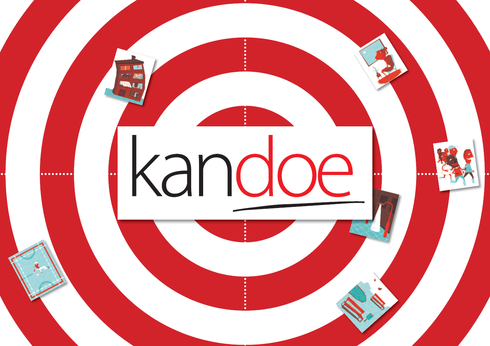

Wat is Kandoe?
Kandoe is een methodiek van de UAB ( www.universiteitalgemeenbelang.be )1, die een groep
toelaat om gezamenlijk tot een prioritering van items rond een bepaald thema te komen. Het
wordt bijvoorbeeld gebruikt om na te gaan wat er leeft en kan aangepakt worden in een buurt of
organisatie, om vertegenwoordigers te kiezen,... Binnen de opleiding TI wordt Kandoe gebruikt om
samen met het bedrijfsleven af te stemmen welke competenties/technologieën al dan niet aan bod
moeten komen in de opleiding. Het kan echter evengoed gebruikt worden om samen te bepalen
naar welk café er gegaan zal worden of wat het diner zal zijn voor nieuwjaar. Kortom alle
levensbelangrijke beslissingen kunnen met deze tool gefaciliteerd worden.
De methodiek is opgevat als een strategisch spel dat in de analoge wereld als volgt verloopt
-
Een (spel)organisator bepaalt waarover het spel zal gaan door kaartjes op te stellen met
daarop een woord of kort stukje tekst (bv. ‘speelplein aanleggen’, ‘presenteren voor een
groep’, ‘het stamenee’) en (optioneel) een illustratie
-
Deelnemers kiezen een aantal kaartjes (bv. 2 of 3) uit het beschikbare aanbod (voorbereid
in stap 1). Deelnemers kunnen ook zelf nog kaartjes toevoegen aan het spel indien
gewenst.
-
Deelnemers gaan rond een tafel staan waarop een Kandoe ‘cirkel’ ligt. Dit kan een
‘kansencirkel‘ zijn om te bepalen wat belangrijk is of een ‘problemencirkel’ om te bepalen
wat net niet belangrijk. Enkel de gekozen kaartjes uit stap 2 worden langsheen de
buitenste cirkel gelegd.
-
Nu worden er verschillende rondes gespeeld . In elke ronde schuift elke deelnemer om de
beurt één van de kaartjes (te kiezen uit alle kaartjes die rond de cirkel liggen, dus niet enkel
diegene die hij/zij gekozen had uit het aanbod) één stap meer naar het midden van de
cirkel.
-
De spel organisator beslist wanneer het spel eindigt (bv. wanneer er een of meerdere
kaartjes in het midden zijn beland) en neemt een foto van de tafel (bovenaanzicht).
-
Kaartjes die meer in het midden van de cirkel liggen hebben voor de deelnemers een
hogere/lagere prioriteit (afhankelijk van het type cirkel). De prioritering is een feit en
zichtbaar op de cirkel.